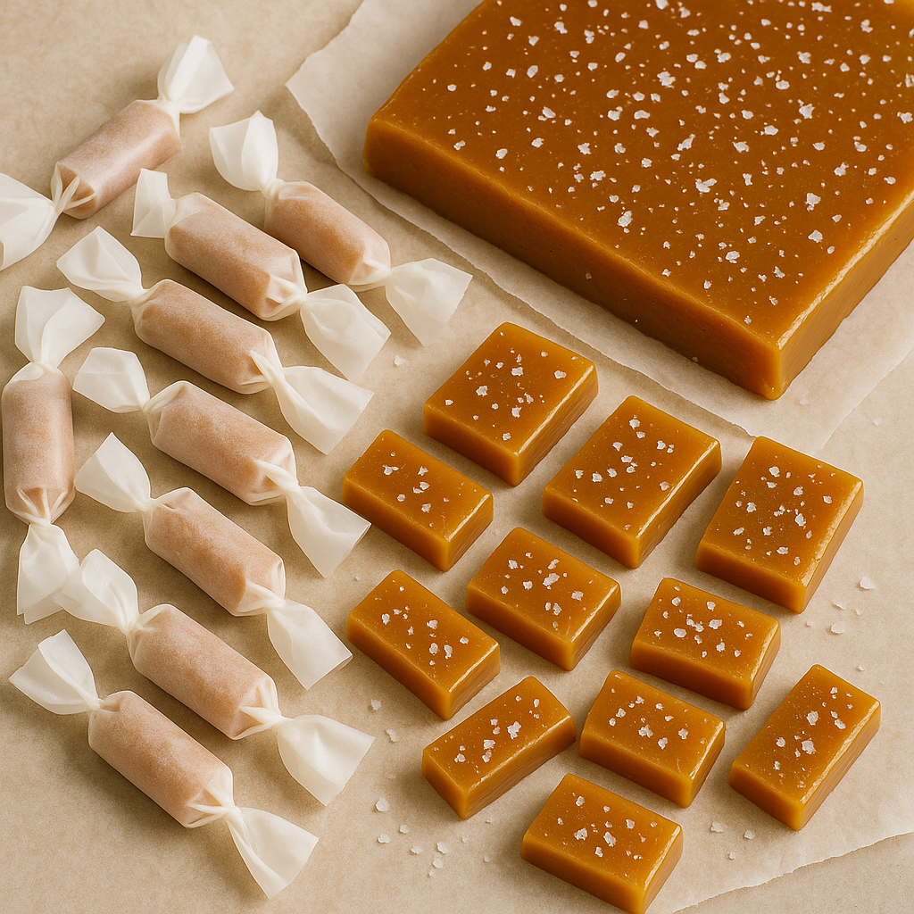

Homemade Salted Caramel
Developed by Forrest White & Cook Anything Kitchen
Ingredients
- 2 Sticks Unsalted Butter
- 4 Cups Sugar
- 2 Cups White Corn Syrup
- 1 Tsp Salt
- 2 Cans Evaporated Milk
Directions
- Place butter, sugar, corn syrup and salt into a large pot and bring to a boil.
- Stirring constantly, pour in both cans of evaporated milk, slowly, taking about 10 minutes per can.
- It should start turning a nice, golden-brown color. Continue Stirring.
- Add a candy thermometer and bring the caramel up to 235-238 degrees
- Once it has reached the temperature, Pour into a 9x13 pan lined with parchment. Sprinkle with salt.
- Let cool completely, then refrigerate 30 minutes before cutting.
- Cut into 3/4"x1" candies and wrap with parchment paper.
Notes
- Use a heavy-bottomed pot to prevent scorching during the long cook time.
- Stir constantly once the milk is added — caramel can burn quickly.
- If the caramel separates or looks grainy, lower the heat and keep stirring; it will usually come back together.
- For firmer candies, cook to the higher end of the 235–238°F range.
- Wrapping each piece tightly in parchment helps prevent sticking and keeps the candies fresh.
Nutritional Information
Serving Size: 60 servings, 1 piece each serving
Calories: 115
Fat: 5.4 g
Carbohydrates: 16 g
Protein: .6 g